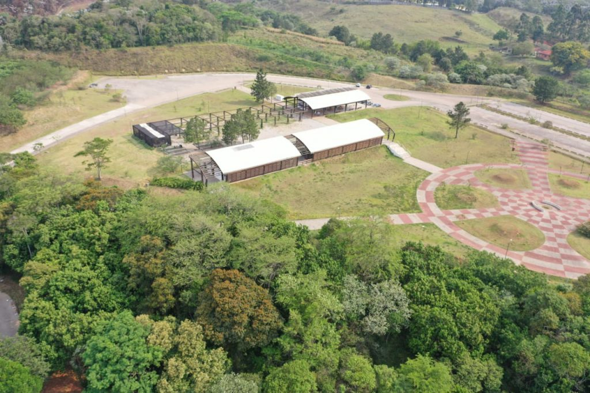
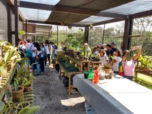

Para quem quiser curtir a natureza, pode se programar para fazer um piquenique, andar de bicicleta ou mesmo uma caminhada para observação.
Dos parques disponíveis em Cotia temos:
Cemucam
Parque Teresa Maia
Jequitibá
Reserva do Morro Grande
Ainda podemos encontrar locais que cativam tanto pela beleza quanto pela tranquilidade como o Templo Zu Lai, com locais para esticar uma toalha e observar contemplar a natureza.
Cemucam
Parque com área de lazer, quiosques, locais para piquenique, para quem curte fazertrilhas, caminhadas e com o circuito para andar de bicicletas.
O parque é pequeno localizado num bairro tranquilo, possui muitas árvores, uma academia ao ar livre, trilha, nascente e um lago. Aos sábados tem espaço para uma feira orgânica.
Rua Santarém, 13 - Vila Santo Antônio de Carapicuíba
Jequitibá


É um parque novo com uma trilha na floresta, galpão de atividades e um viveiro.
R. Sapucaí, 320-776 - Gramado - Cotia
Reseseva do Morro
Esse parque apresenta diversas trilhas, próprio para quem curte aventura.
Estrada do Pesqueiro, 685-996 - Cachoeira - Cotia
Templo Zu Lai
Local tranquilo, perfeito para refletir e acalmar a alma.